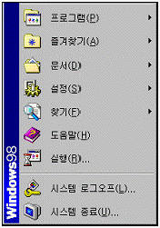
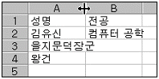
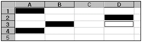
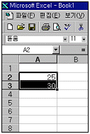
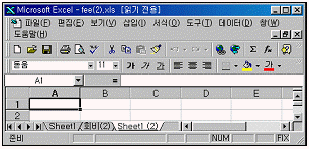
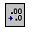
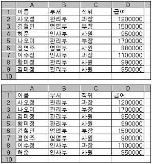
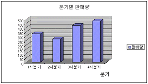
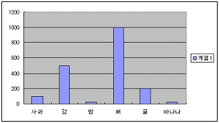

컴퓨터활용능력-3급(폐지) (2001-10-07 기출문제)
1과목: 컴퓨터 일반
1. 다음 중 컴퓨터의 특징으로 거리가 먼 것은?
- 처리의 신속, 정확
- 대량의 기억 능력
- 논리 판단 및 비교
- 창의력 및 개발 능력
(정답률: 85%)

2. 다음 중 CPU에서의 접근 속도(Access Time)가 가장 빠른 것은?
- RAM
- CACHE
- HDD
- FDD
(정답률: 66%)
3. 중앙처리장치(CPU)의 구성요소가 아닌 것은?
- 레지스터(register)
- 산술장치(arithmetic units)
- 논리장치(logic units)
- 모뎀(modem)
(정답률: 73%)
4. 통신에서 컴퓨터와 컴퓨터 사이의 정보 교환을 원활히 할 수 있도록 규정된 통신 규칙은?
- 인터페이스(Interface)
- 프로토콜(Protocol)
- 터미널(Terminal)
- 샘플링(Sampling)
(정답률: 78%)
5. 다음 중 컴퓨터 연산처리 속도인 10-9와 관련이 깊은 것은?
- ns(Nano Second)
- ps(Pico Second)
- fs(Femto Second)
- as(Atto Second)
(정답률: 64%)
6. 다음은 주기억장치와 보조기억장치를 비교 설명한 것이다. 가장 옳지 않은 것은?
- 주기억장치는 중앙처리장치가 직접 사용할 수 있는 정보를 기억시켜 놓는 기억장치이다.
- 보조기억장치에 기억되어 있는 정보는 중앙처리장치가 직접 사용할 수 없으므로 일단 주기억장치에 읽어들인 후에 주기억장치에서부터 사용된다.
- 주기억장치와 보조기억장치를 구성하는 기억소자는 빠른 접근속도를 위하여 같은 기억 소자를 사용한다.
- 주기억장치의 용량은 보조기억장치보다 상대적으로 작다.
(정답률: 66%)
7. 윈도우 98의 미디어재생기를 이용하여 재생할 수 없는 파일 형태는?
- PCX
- AVI
- WAV
- MIDI
(정답률: 69%)
8. 한글 Windows 98의 시스템 유틸리티 가운데 하드디스크를 압축하지 않고 임시파일, 캐시파일 등을 삭제하여 하드디스크의 공간을 확보할 수 있는 작업은 다음 중 어는 것인가?
- 디스크 정리
- 디스크 공간 늘림
- 디스크 조각 모음
- 디스크 검사
(정답률: 80%)
9. 다음 중 한글 Windows 98 작업도중 [Ctrl]+[Esc]를 누르면 어떤 현상이 일어나는가?
- 시작 메뉴가 나타난다.
- 실행 창이 종료된다.
- 작업중인 항목의 바로 가기 메뉴가 나타난다.
- 창 조절 메뉴가 나타난다.
(정답률: 80%)
10. 그림과 같이 윈도우즈에서 [시작] 버튼을 눌렀을 때 표시되는 메뉴에서 [즐겨찾기]에 대한 설명으로 틀린 것은 무엇인가?

- 인터넷 익스플로러에서 [즐겨찾기] 메뉴의 목록과 같다.
- 인터넷에서 자주 찾는 사이트의 주소를 모아 놓은 것이다.
- Windows 탐색기의 “C:\Windows\Favorites” 폴더에 목록이 저장되어 있다.
- 즐겨찾기에 주소를 한번 등록시켜 두면 삭제가 불가능하다.
(정답률: 78%)
11. 바탕화면에 여러 화면이 펼쳐져 있을 때 그 중에서 활성화된 창만 캡쳐(Capture) 하려고 한다. 사용하는 단축키는 무엇인가?
- [Ctrl+[C]
- [Alt]+[Print Screen]
- [Shift]+[Print Screen]
- [Ctrl]+[Print Screen]
(정답률: 78%)
12. 한글 윈도우즈 98에서 파일을 삭제하면 휴지통에 들어가게 된다. 휴지통에 넣지 않고 완전히 삭제할 때 [Del] 키와 함께 사용하는 키는 무엇인가?
- [Shift]
- [Alt]
- [Space]
- [Ctrl]
(정답률: 86%)
13. 한글 윈도우즈 98에서 많은 작업이 동시에 수행될 수 있다. 이때 열려진 창(작업 프로그램)을 전환하는 단축키는 무엇인가?
- [Alt]+[F4]
- [Alt]+[Tab]
- [Ctrl]+[F4]
- [Ctrl]+[Tab]
(정답률: 78%)
14. 한글 Windows 98에 관한 다음 설명 중 가장 옳지 않은 것은?
- 왼손잡이를 위해 마우스의 단추 설정을 변경할 수 있다.
- 마우스를 사용할 수 없게 되었을 때 키보드로 마우스를 대용할 수 있다.
- 마우스의 두 번 누르기 속도를 느리게 하거나 빠르게 조절할 수 있다.
- [내 컴퓨터]-[프린터]에서 글꼴 및 글꼴의 크기를 설정할 수 있다.
(정답률: 67%)
15. 다음의 도메인 이름 중에서 정부기관과 관련된 사이트의 이름은?
- www.government.pe.kr
- www.company.co.kr
- www.Korea.go.kr
- www.Seoul.re.kr
(정답률: 83%)
16. 인터넷에서 제공되는 서비스로 가장 적절하지 않은 것은?
- FTP
- Gopher
- NetBios
- WWW
(정답률: 65%)
17. 다음 중 HTML에 관한 설명이 아닌 것은?
- 웹(web)상에서 볼 수 있는 문서를 만들기 위한 언어이다.
- SGML이라는 국제 전자문서 표준을 기반으로 만들어진 언어이다.
- 기존의 언어와는 달리 태그(tag)를 사용하지 않는다.
- 일반 텍스트 문서와 같은 ASCII 파일이며, 확장자로 htm이나 html을 갖는다.
(정답률: 68%)
18. 인터넷이나 통신망의 자료실에서 다운로드할 수 있는 소프트웨어에 대한 다음의 설명 중 가장 옳지 않은 것은?
- 상용 소프트웨어는 돈을 받고 판매하는 소프트웨어이므로 허가 없이 사용하면 안된다.
- 프리웨어(freeware)는 개발자가 소스를 공개한 소프트웨어이므로 제한없이 사용할 수 있다.
- 쉐어웨어(Shareware)는 일정 기능이나 일정 기간 동안에 무료로 사용할 수 있는 소프트웨어로서 대부분 등록을 하고 사용하는 것이 좋다.
- 베타 버전 소프트웨어는 정식 버전의 소프트웨어가 출시되기 전에 프로그램에 대한 일반인의 평가를 수행하고자 제작한 소프트웨어로서, 문제가 발생하면 프로그램 제작 회사에서 손해 배상을 청구할 수 있다.
(정답률: 68%)
19. 웹상에서 사용자가 원하는 정보의 위치를 알려주기 위해 사용하는 주소로서 프로토콜, 서버주소, 디렉토리, 파일명 등으로 구성되는 것을 무엇이라 하는가?
- e-메일주소
- URL
- HTTP
- FTP
(정답률: 59%)
20. 다음 중 컴퓨터 바이러스에 대한 설명으로 가장 옳지 않은 것은?
- 바이러스의 종류에 따라 나타나는 증상도 다양하다.
- 바이러스는 CD-ROM에 수록된 자료도 손상시킬 수 있다.
- 전자우편 등 인터넷을 통한 감염도 일어난다.
- 감염된 파일을 완전히 삭제하는 것이 가장 안전한 치료 방법이다.
(정답률: 68%)
2과목: 스프레드시트 일반
21. 다음은 기본설정(default) 상태에서의 문자 데이터 입력에 관한 설명이다. 잘못 표현된 것은?
- 숫자와 문자가 혼합된 데이터가 입력되면 문자열로 입력된다.
- 문자열이 한 셀의 너비보다 긴 경우 오른쪽의 셀이 비어 있을 때는 연결되어 표시된다.
- 한 셀에 두 줄 이상의 문자열을 입력할 때는 [Shift]+[Enter]를 누르고 입력하면 된다.
- 문자 데이터는 입력 후 자동으로 왼쪽 정렬된다.
(정답률: 61%)
22. 다음 함수 ‘=ROUNDUP(42.563,2)’의 실행결과로 올은 것은?
- 42.56
- 42.50
- 42.60
- 42.57
(정답률: 53%)
23. 행과 열을 숨기는 방법에 관한 다음 설명 중 옳지 않은 것은?
- 숨기고자 하는 행 번호를 선택하고 [행 높이] 대화상자에서 0을 입력한다.
- 숨기고자 하는 열 문자를 선택하고 [열 너비] 대화상자에서 -100%를 입력한다.
- 숨기고자 하는 행 번호를 선택하고 [숨기기]를 클릭한다.
- 연속되지 않는 행을 숨기기 위해서는 [Ctrl] 키를 조합하여 선택하고 [숨기기]를 클릭한다.
(정답률: 68%)
24. [Shift]+[Tab]을 누르면 셀 포인터는 어느 방향으로 이동되는가?
- 위쪽으로
- 아래쪽으로
- 왼쪽으로
- 오른쪽으로
(정답률: 68%)
25. 아래 시트 그림에서 열 머리글인 A와 B 사이의 열 구분선에서 마우스를 더블 클릭하면 어떻게 되는가?

- 아무런 변화가 없다.
- A2 셀의 폭 사이즈에 맞게 자동 조절된다.
- A3 셀의 폭 사이즈에 맞게 자동 조절된다.
- A4 셀의 폭 사이즈에 맞게 자동 조절된다.
(정답률: 88%)
26. 다음 그림과 같이 불연속적인(인접하지 않은) 다수의 셀을 선택하려고 할 때 마우스와 함께 이용되는 키보드의 키는?

- [Alt]
- [Ctrl]
- [Shift]
- [Spacebar]
(정답률: 85%)
27. 다음 그림과 같이 데이터를 입력하여 [A2]와 [A3]을 선택한 후 채우기 핸들 포인터로 [A6]까지 드래그 하였다. [A6]의 값은?

- 100
- 50
- 33
- 45
(정답률: 77%)
28. 작업지의 내용이 많아 셀 포인터를 아래나 오른쪽으로 이동시키면 제목이 보이지 않아 불편을 겪게 된다. 제목은 고정시키고 작업지의 내용만 이동하게 하는 방법으로 가장 적절한 것은?
- [보기]-[확대/축소]에서 배율조정
- [창]-[틀 고정]을 활용
- [창]-[배열]에서 문서 배열
- [도구]-[옵션]에서 화면 표시 탭의 설정을 활용
(정답률: 85%)
29. 아래 그림에서 어느 키를 누른 상태에서 [Sheet1] 시트를 드래그하여 놓으면 그 시트를 복사할 수 있는가?

- [Ctrl]
- [Shift]
- [Alt]
- [Insert]
(정답률: 79%)
30. 인쇄할 워크시트의 데이터량이 많아 여백도 조정하고, 용지방향도 바꾸어 보았으나 원하는 쪽 수에 다 인쇄할 수 없었다. 이 경우 원하는 쪽 수에 인쇄할 수 있도록 쪽 설정 대화상자에서 무엇을 조정하면 되는가?
- 머리글 편집
- 인쇄 품질
- 시작 쪽
- 자동 맞춤
(정답률: 73%)
31. 45.445를 입력한 다음에 자릿수 줄임버튼(그림참조)을 두번 눌렀을 때 결과값은?

- 45.3
- 45.5
- 45.4
- 45.0
(정답률: 71%)
32. 다음 왼쪽 그림은 원래 데이터를, 오른쪽 그림은 정렬된 결과를 나타낸 그림이다. 정렬 기준 순서로 옳은 것은?(단 모든 정렬은 오름차순 정렬이다.)

- 첫째 기준(부서), 둘째 기준(직위), 셋째 기준(이름)
- 첫째 기준(이름), 둘째 기준(직위), 셋째 기준(부서)
- 첫째 기준(직위), 둘째 기준(부서), 셋째 기준(이름)
- 첫째 기준(부서), 둘째 기준(이름), 셋째 기준(직위)
(정답률: 65%)
33. 다음 중 수식에 대한 설명으로 틀린 것은?
- 수식은 항상 ‘=’ 기호로 시작한다.
- 수식에서 참조하는 셀의 값이 변경되면 자동으로 결과값이 재계산된다.(단, 옵션에서 계산이 자동으로 체크된 경우)
- 수식의 결과 값은 수식 입력줄에만 나타난다.
- 수식은 연산자, 워크시트 함수, 상수, 셀 참조 등으로 구성된다.
(정답률: 84%)
34. 셀 [A1]에 ‘1’이, 셀 [A2]에 ‘-1’의 값이 있다. 이 값에 따라 [B1]과 [B2] 셀에 각각 ‘양수’, ‘음수’의 값을 넣고자 한다. 다음 함수 사용 중 옳은 방법은?
- =IF(A1>0,“양”,“음”)
- =IF(A1>0, THEN“양”ELSE“음”)
- =IF(A1 IS POSITIVE THEN“양”ELSE“음”)
- =IF(A1>0 THEN“양”,“음”)
(정답률: 66%)
35. 상품 가격이 2,500원짜리 물건에 대하여 총 판매액이 1,500,000원이 되게 하기 위해서는 판매수량이 얼마나 되어야 하는지 알아보기 위해 사용되는 유용한 기능은?
- 피벗 테이블
- 목표값 찾기
- 시나리오
- 레코드관리
(정답률: 82%)
36. 다음 차트에서 설정되지 않은 옵션은?

- 범례
- 차트 제목
- 축 제목
- 데이터 이름표
(정답률: 60%)
37. 다음 그림의 Y축 주 단위는 얼마인가?

- 200
- 1
- 100
- 50
(정답률: 80%)
38. 차트 작성에 관한 설명이다. 다음 중 옳지 않은 것은?
- 차트의 종류도 수정이 가능하다.
- 차트의 제목을 삽입할 수 있다.
- 범례는 아래와 오른쪽에만 위치한다.
- 데이터의 이름표를 삽입할 수 있다.
(정답률: 79%)
39. 부분합 기능에서 사용할 수 없는 함수는?
- 표본 분산
- 수치 개수
- 최대값
- 순위
(정답률: 58%)
40. 다음은 데이터베이스 목록을 사용할 경우에 대한 설명이다. 가장 옳지 않은 것은?
- 레코드 대화상자에서 ‘3/12’ 표시는 전체 레코드 수에 대한 현재의 레코드 번호를 나타낸다.
- 워크시트의 행을 ‘필드’라 하고 열의 내용을 ‘레코드’라 한다.
- 선택영역의 첫 행이나 목록을 이름표로 사용한다.
- 필드로 사용할 열머리글과 1개 이상의 레코드를 가져야 한다.
(정답률: 50%)